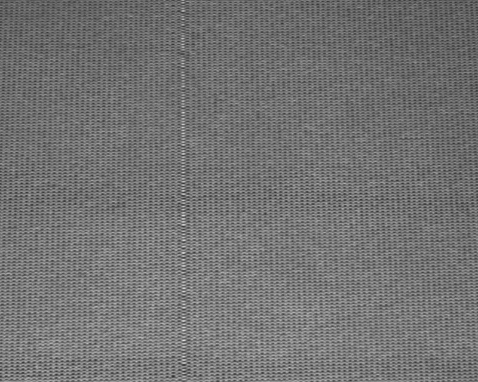
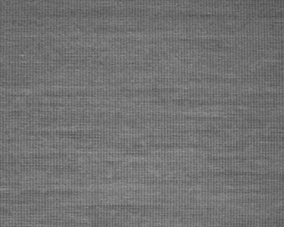

시간 순서의 이미지
촬영된 직물 사진을
순서대로 살펴봅니다.
SURFACETRACE · RECORDED RESULTS
OVERVIEW
시간 순서로 들어오는 직물 사진에서 이상 위치와 외관 변화를 분석하고,
사람의 검수와 기준 후보 검증으로 이어지는 흐름을 보여줍니다.

촬영된 직물 사진을
순서대로 살펴봅니다.
한 장 안에서
기준과 다른 위치를 찾습니다.


여러 장에 걸친
전체 모습의 변화를 봅니다.

→
점수와 변화 신호를 모아
확인할 사진을 제시합니다.

우선 2건 확인 후
필요하면 총 8건까지.

오경보와 결함 탐지를 함께 비교해 적용 여부를 결정합니다.
ORIGINAL SURFACETRACE
사진의 특징을 추출하고,
기준을 선별해 변화와 이상을 확인합니다.

AI가 모든 결함을 판정하는 것이 아니라, 현장 담당자의 검수와 의사결정을 지원합니다.사진별 이상 분석과 구간 외관 변화는 독립적으로 진행되며, 검수 결과는 기준 후보 검증에 활용될 수 있습니다.
DATA & REFERENCE
TSFabrics의 시간 순서 사진을 사용합니다. DINOv2는 재학습하지 않고 특징 추출기로 사용합니다. 결함 라벨 없이 기준 사진을 선별해 reference bank를 구성합니다.
DINOv2를 새로 학습하는 과정이 아닙니다.
비교 기준인 특징 모음을 구성합니다.
Frozen DINOv2 ViT-S/14 · 입력 448×364
기준과의 거리가 큰 패치가 이상 위치로 표시됩니다.

초기 사진을 선별하고 사진당 24개 특징을 저장합니다.
이후 1,536장의 점수로 경보선 0.4708을 보정했습니다.
기준 특징의 세 번째 최근접 코사인 거리로 패치 점수를 계산합니다. 상위 9개 패치 점수의 평균을 사진 점수로 사용하며, 경보선은 보정 점수의 99.5백분위수입니다.
DESIGN CHOICES · 데이터와 기준
결함 라벨이 적은 상황에서 사진을 비교하기 위해 사전학습 특징을 사용했습니다. 모델 가중치는 고정하고 기준 특징을 구성했습니다.
초기 512장의 코사인 유사도 기반 이례성 점수를 계산합니다. DINOv2 전체 이미지 특징을 PCA 첫 번째 주성분에 투영하고, 사분위수 기준으로 4개 그룹을 나눕니다. 각 그룹에서 이례성 점수가 낮은 60%를 선별합니다. 선별된 308장에서 기준 패치 특징 7,392개를 구성합니다.
FOUNDATION FEATURES
같은 사진에서 수작업 특징과 DINOv2 + 기준 선별을 비교합니다. 붉은 부분은 기준과 차이가 큰 위치입니다.
점수 —
점수 —
ANOMALY DETECTION · AUROC & AP
현재 경보선은 0.4708입니다. 보정 점수의 99.5백분위수로 정했으며, 이를 넘는 사진에 경보를 냅니다. 결함 확률을 뜻하지는 않습니다.
AUROC는 정상·결함 점수의 구분 능력을 나타냅니다.
| 평가 지표 | Handcrafted | DINOv2 + Selection |
|---|---|---|
| AUROC | 0.884 | 0.965 |
| Average Precision | 66.4% | 85.4% |
두 지표 모두 결함 포함 4개 Run의 Macro 평균입니다.
VISUAL SHIFT
생산 중 소재·조명·촬영 조건이 바뀌면 정상 사진도 기존 기준과 다르게 나타날 수 있습니다. 이를 개별 결함과 별도로 관찰하고, 담당자가 생산 환경의 변화 가능성을 확인하도록 지원합니다.
128장 묶음 · 32장마다 계산
3회 연속 MMD 경보선 초과 시 외관 변화 신호
서로 다른 두 녹화를 이어 붙인 시험입니다. 새 녹화 96번째에서 변화 신호가 확인됩니다.
CHANGE SIGNAL · 설계와 검증
한 장의 국소 결함과 별도로 여러 사진의 전체 특징 분포를 비교합니다.
새 사진이 들어올 때 비교 창을 옮겨 변화 점수를 갱신합니다.
한 번 튄 값에 바로 반응하지 않도록 연속된 경보선 초과를 확인합니다.
RECORDED INTERVAL
모든 사진을 사람이 다 보지 않고, AI가 검수 우선순위를 정합니다. 전체 사진의 점수를 계산하고 같은 사건에 검수가 몰리지 않도록 시간 간격을 둡니다.
상위 순위로 선택된 검수 후보입니다.
경보선 아래의 사진도 포함될 수 있습니다.
먼저 두 장을 확인한 뒤, 추가 여섯 장의 요청 여부가 결정됩니다. 후보를 누르면 검수 단계로 연결됩니다.
REVIEW COVERAGE · 8장 선정 근거
확인할 사진의 상한을 8장으로 두고, 같은 예산 안에서 선정 방식의 효과를 비교했습니다.
하나의 결함이 연속된 여러 사진에 나타날 수 있으므로, 같은 결함을 반복 검수하지 않도록 시간적으로 분산된 사진을 선정합니다.
점수 상위 8장 → 간격을 둔 8장
다른 촬영 설정의 결함 녹화 2개: 7 → 12건 발견 · 사후 점검
12와 16은 개발 녹화에서도 모두 20건으로 동률이었습니다. 더 넓은 시간 분산을 유지하는 16을 사용했습니다. 간격 32에서는 가장 짧은 녹화에서 8장을 채우지 못했습니다.
원본 간격 비교 기록 ↗LIMITED REVIEW
한 장씩 확인한 검수 결과를 기록합니다. 먼저 2건, 필요하면 총 8건까지 확인하며, 사람이 확인한 결과는 향후 기준 후보 검증의 근거가 될 수 있습니다.
실제 작업자 기록이 아니라 공개 데이터의 정답을 활용한 검수 재현입니다.
두 장의 정상 확인은 추가 검수 요청을 종료하는 규칙이며, 구간 전체의 정상 판정이 아닙니다.
REVIEW WORKLOAD · 단계적 검수의 근거
두 결과가 모두 정상이면 종료하고, 결함 또는 불확실한 결과가 있으면 여섯 건을 더 확인하는 규칙입니다.
발견한 신규 사건은 26건 유지
정상 사진 검수 101 → 29장
처음부터 8건을 요청하기 전에 적은 수로 추가 검수 필요성을 확인하는 설계입니다.
| 먼저 확인 | 총 요청 | 발견 사건 |
|---|---|---|
| 1건 후보 | 44건 | 26건 |
| 2건 사용 | 56건 | 26건 |
| 3건 후보 | 68건 | 26건 |
1건 후보는 결함이 있는 구간에서 첫 사진만 정상인 어려운 사례를 검증하지 못해, 기존 2건 규칙을 유지했습니다.
검증하는 동안 기존 기준을 보존합니다
기존 기준의 복사본에 검수된 정상 특징 추가
오경보와 결함 탐지를 같은 후속 사진에서 비교
이번 후보: 적용 보류 · 기존 기준 유지
REFERENCE VALIDATION
기존 기준을 보존하고, 복사본에 검수된 정상 특징을 추가해 후보를 만듭니다. 같은 후속 데이터에서 검증한 뒤 적용 여부를 검토합니다. 데이터가 쌓인다고 무조건 성능이 좋아지지는 않습니다.
별도 15개 Run · 구간당 8건 고정 검수 실험입니다.
DINOv2 가중치는 고정합니다. 실제 자동 승인·실시간 모델 재학습을 구현한 것은 아닙니다.
기존 기준검수 기반 후보
후보 적용 보류 · 기존 기준 유지
정상 사진 오경보는 줄었지만 결함 사진과 서로 다른 신규 결함 사건의 경보도 감소했습니다.
이 그림은 초기 512장을 라벨 없이 선별한 별도 후보의 예시입니다. 위의 검수 기반 후보 집계와는 다른 실험입니다.
QUALITY MANAGEMENT · HUMAN-IN-THE-LOOP
AI가 분석하고 사람이 확인합니다. 기록된 검수 결과는 새로운 기준의 적용 가능성을 검증하는 근거가 됩니다.
이번 순차 검수 평가에서 발견한 신규 결함 사건 26건 유지
결함 포함 4개 Run · Macro 평균
동일한 4개 Run · Macro 평균
FROM ANALYSIS TO FIELD DECISIONS
연속된 생산 사진에서 어디를 먼저 확인할지 판단하기 어려운 현장을 지원합니다.
생산 중 확인이 필요한 이상 영역과 외관 변화를 파악하도록 지원합니다.
이상 점수가 높은 사진을 시간적으로 분산해 선정합니다. 우선 2장, 필요하면 최대 8장을 확인하며 검수 결과에 따라 추가 요청을 조절합니다.
128 → 56건검수 요청 56.3% 감소
이번 평가에서 기존 검수 방식으로 발견한 신규 결함 사건 26건을 유지했습니다.
생산 조건이 달라져 새 데이터가 쌓여도, 곧바로 검사 기준에 반영하기는 어렵습니다.
기존 기준을 보존하고, 복사본에 사람이 정상으로 확인한 이미지의 특징을 추가합니다. 새 후보는 별도의 후속 데이터에서 평가합니다.
정상 사진 오경보와 실제 결함 탐지를 함께 확인하며, 성능이 악화되면 기존 기준을 유지합니다.
정상 오경보는 줄었지만 실제 결함 탐지도 감소해, 이번 후보는 적용하지 않았습니다.
데이터 축적 자체가 성능 향상을 보장하지 않습니다. 검수 결과를 후보 생성과 검증에 활용하고, 검증 후 적용 여부를 판단합니다.
공개 데이터의 정답으로 사람 검수를 재현한 오프라인 실험입니다.
실제 TSFabrics 사진·저장된 분석 결과 재생 · CC BY 4.0 원본 시연 보기 ↗